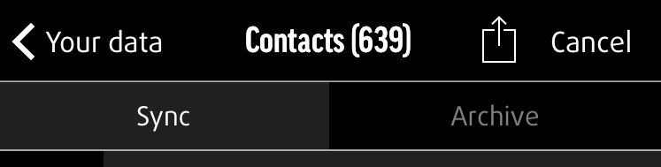

Compartir archivos guardados con otras apps
Los datos sincronizados y archivados se pueden compartir desde la app. Selecciona los archivos (p.ej.: fotos, vídeos, documentos, etc.) que quieres compartir y en la esquina inferior izquierda selecciona el icono de Compartir (una caja con una flecha que sobresale por arriba), que mostrará las opciones para compartir, igual que en tu dispositivo.
